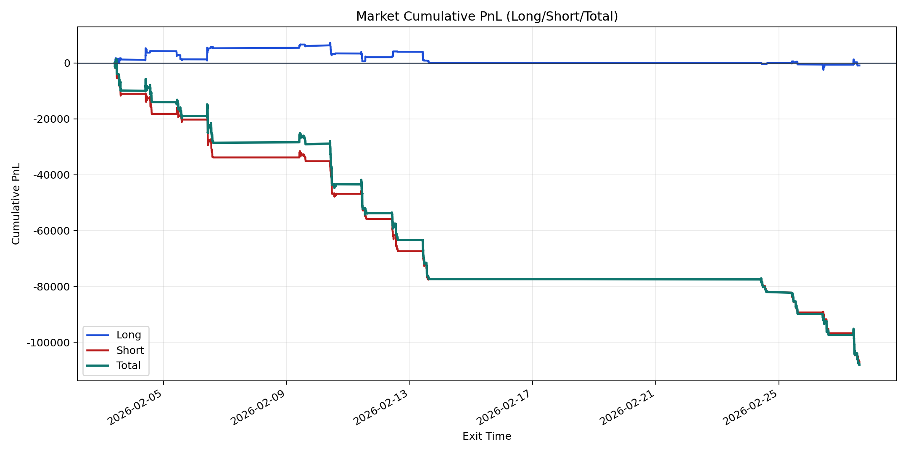
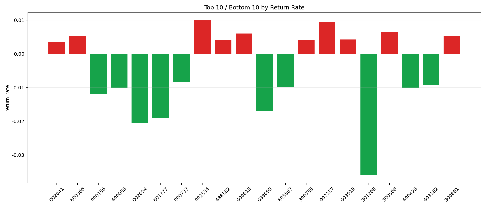

| repo_root | /home/haoranyou/data/output/dynamic_AUM_TAKER_index1000 |
|---|---|
| period_months | 1 |
| period_label | 2026-02-03_to_2026-02-27 |
| start_time | 2026-02-03 09:52:57 |
| end_time | 2026-02-27 14:45:22 |
| n_trades | 4549 |
| n_symbols | 202 |
| total_pnl | -108019.50045000055 |
| long_total_pnl | -906.2315999995501 |
| short_total_pnl | -107113.26885000103 |
| total_entry_notional | 78400606.99999999 |
| long_entry_notional | 15533423.000000002 |
| short_entry_notional | 62867184.0 |
| total_return_rate | -0.0013777890833166708 |
| long_return_rate | -5.834075335484973e-05 |
| short_return_rate | -0.0017038025569906395 |
| top_symbols_by_return | ["002534", "002237", "300568", "600618", "300861", "600366", "603919", "688382", "300755", "002041"] |
| bottom_symbols_by_return | ["301268", "002654", "601777", "688690", "000156", "600058", "600428", "603887", "603162", "000737"] |

